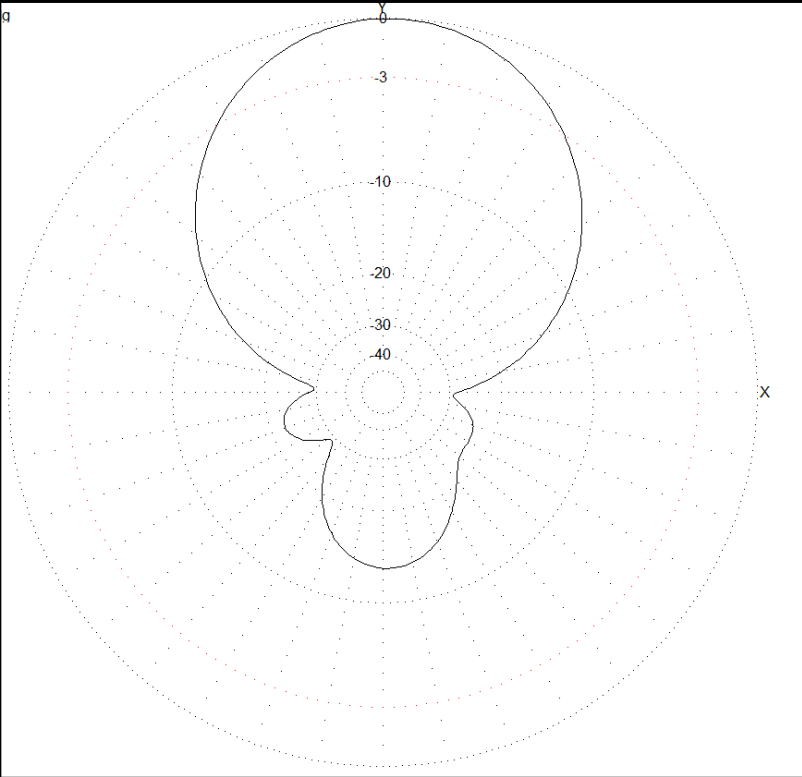
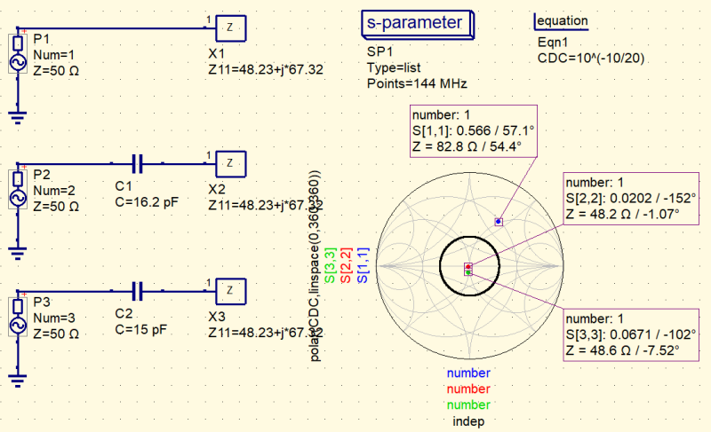
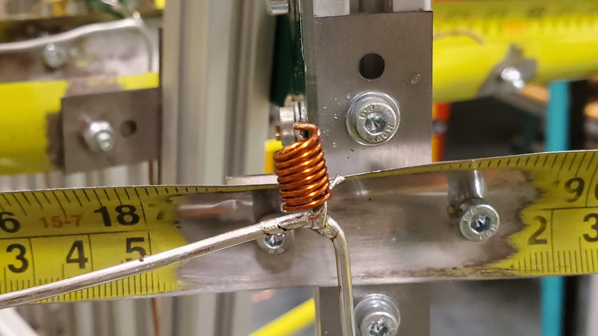
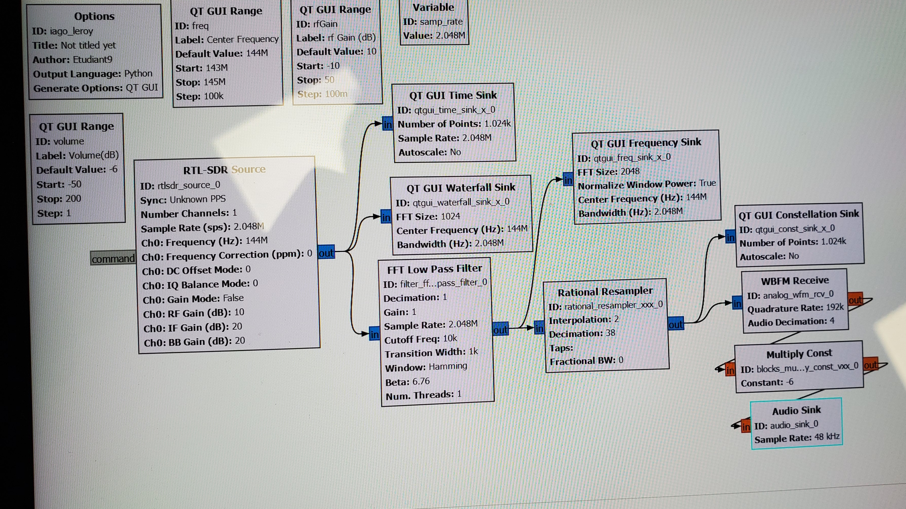
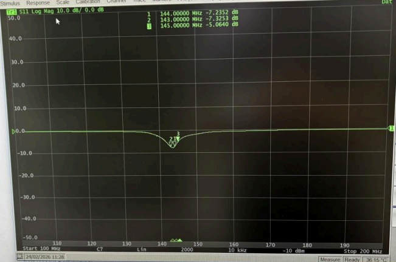
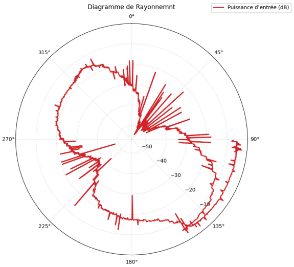

Présentation du Projet
Dans le cadre du BUT GEII, ce projet consistait à développer un récepteur radio complet capable de capter et de localiser des balises d'émission portatives. L'objectif principal était d'obtenir une directivité maximale pour guider l'opérateur vers la source du signal lors d'une chasse au renard (chasse à la balise). Au-delà de cet exercice, cette technologie trouve son utilité principale dans des contextes d'urgence, notamment pour localiser rapidement des balises de détresse lors d'opérations de secours.
Avec mon binôme, nous avons pris en charge l'intégralité de l'étude : depuis les calculs d'adaptation d'impédance haute fréquence jusqu'au protocole de validation finale sur appareils de mesure.
Développement du Projet


Phase de Conception
Cette étape formalise la modelisation et les simulations des étages de réception haute fréquence pour s'aligner sur les exigences du cahier des charges.
EXIG_DIRECTIVITE & EXIG_OUVERTURE
L'antenne devait posséder un gain élevé pour capter les signaux faibles, associé à un angle d'ouverture horizontal inférieur à 70°. À l'aide de MMANA-GAL, nous avons simulé le diagramme de rayonnement polaire en plan d'Azimut (2D) pour vérifier comment l'antenne capte le signal selon son orientation, ce qui nous a permis de récupérer la valeur de son impédance brute.
EXIG_IMPEDANCE & EXIG_FREQUENCE
Le système devait être centré sur la fréquence de 144 MHz avec un coefficient de réflexion (S11) inférieur à -10 dB. En utilisant l'impédance de la simulation précédente, nous avons utilisé uSimmics pour dimensionner les composants théoriques d'adaptation. Cela sert à caler l'impédance vers les 50 Ohms pour améliorer le gain à cette fréquence et ainsi mieux détecter les balises.


Phase de Fabrication et Intégration
Pour l'assemblage mécanique de l'antenne et l'intégration des circuits, nous avons suivi les étapes de la Liste de Contrôle de Fabrication (LCF) imposée.
Une fois la structure construite, l'impédance réelle obtenue était proche de nos simulations MMANA-GAL mais ne permettait pas d'atteindre les 50 Ohms. Nous avons donc utilisé l'outil de calcul de uSimmics pour concevoir une bobine magnétique adaptée (nombre de spires et espacement). J'ai fabriqué cette bobine en cuivre à la main et ajusté ses spires pour ramener l'impédance du circuit vers la valeur cible de 50 Ohms.
En parallèle, nous avons développé une application sous GNU Radio pour traiter le signal en temps réel. L'interface intègre des curseurs de contrôle du gain et un sélecteur permettant de modifier légèrement la fréquence (par exemple 144,1 MHz) pour différencier chaque balise lors de la chasse. Un signal sonore indique l'amplitude reçue pour avertir l'opérateur dès que l'antenne pointe vers la cible.


Phase de Vérification
Cette phase valide la conformité réelle des performances matérielles via des essais physiques face aux exigences initiales.
Validation Radiofréquence (TRVNA)
Le contrôle du récepteur a été réalisé à l'aide d'un Analyseur de Réseau Vectoriel exploité via le logiciel TRVNA. Les relevés de coefficient de réflexion (S11) ont validé le travail de notre bobine d'adaptation faite main, montrant une courbe de réponse qui converge au plus près de l'impédance de référence de 50 Ohms sur la fréquence centrale requise.
Validation Expérimentale de la Directivité
Les tests de directivité sur le terrain ont permis de cartographier le diagramme de rayonnement réel de l'antenne. Le tracé obtenu concorde avec les modélisations de MMANA-GAL, affichant une chute franche de l'amplitude du signal dès que l'axe de l'antenne s'écarte de la cible, ce qui assure une localisation fiable des balises lors du challenge.
Bilan du Projet
Ce projet a mis en valeur les compétences majeures de ma formation en génie électrique. J'ai validé mon aptitude à identifier une exigence issue du cahier des charges et à y associer une solution technique pertinente en concevant le système d'adaptation d'impédance de l'antenne. J'ai également contribué à la rédaction du dossier technique pour formaliser nos résultats théoriques, avant de prendre en charge la vérification de la conformité du système en traduisant les exigences en un protocole de tests réels.
Sur le plan pratique, j'ai développé une maîtrise concrète de l'Analyse de réseaux RF en effectuant les étalonnages et en interprétant les abaques de Smith sur un analyseur vectoriel (VNA). J'ai utilisé des outils spécialisés comme uSimmics et MMANA-GAL pour simuler les lignes électriques et modéliser des diagrammes de rayonnement.